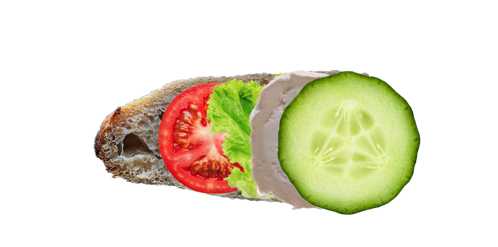

Vous pensez sûrement que THE Sandwich™ est un sandwich banal, mais ce n'est pas le cas.
Vous retrouverez la recette connue et appréciée de tous, réalisée grâce à notre savoir faire et nos ingrédients de qualité.
Ingrédients : Pain, tomate, salade, jambon, gruyère
Nous avons aussi pensé à vous, aucun détails de nous échapent
THE Sandwich™ - Version Végé
Ingrédients : Pain, tomate, salade, fromage de chèvre, concombre
Prix : 2,10€/kg (4 baguettes) - 50 centimes par sandwich
Fournisseur : Boulangerie Martin, 8 Pl. Paul Painlevé
Type d'approvisionnement : Circuit court
Prix : 3,90€/kg (10 tomates) - 20 centimes par sandwich
Fournisseur : Ferme de la Guinguette
Type d'approvisionnement : Circuit court
Prix : 3,10€/kg (2 concombres) - 40 centimes par sandwich
Fournisseur : Ferme de la Guinguette
Type d'approvisionnement : Circuit court
Prix : 1,30€ la salade (250g) - 20 centimes par sandwich
Fournisseur : Ferme de la Guinguette
Type d'approvisionnement : Circuit court
Prix : 1,50€ la tranche (pour 29,50€/kg) - 1,50€ par sandwich
Fournisseur : Miamland
Type d'approvisionnement : Circuit long
Prix : 16€/kg - 60 centimes la tranche par sandwich
Fournisseur : Cora
Type d'approvisionnement : Circuit long
Prix : 24€/kg - 2€ par sandwich
Fournisseur : Les Fermes Vertes
Type d'approvisionnement : Circuit court